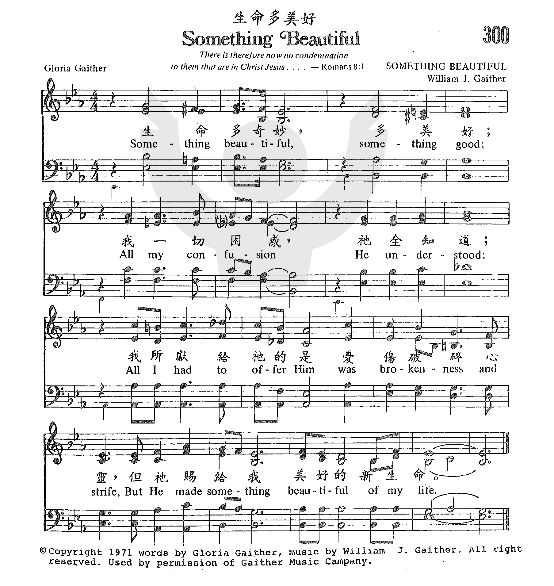

|
|
|
|
300 Something Beautiful
|
300 生命多美好 |
|
https://www.zanmeishige.com/tab/25668.html?songbook=1&index=300

|
|
|
|
|

1258
Something Beautiful
生命多美好
| Text: | Something Beautiful |
| Author: | Gloria Gaither |
| Tune: | SOMETHING BEAUTIFUL |
| Composer: | William J. Gaither |
Tune Information
| Title: | SOMETHING BEAUTIFUL |
| Composer: | Bill Gaither (1971) |
| Meter: | Irregular |
| Incipit: | 32321 21244 54323 |
| Key: | E♭ Major |
| Copyright: | © 1971 William J. Gaither |